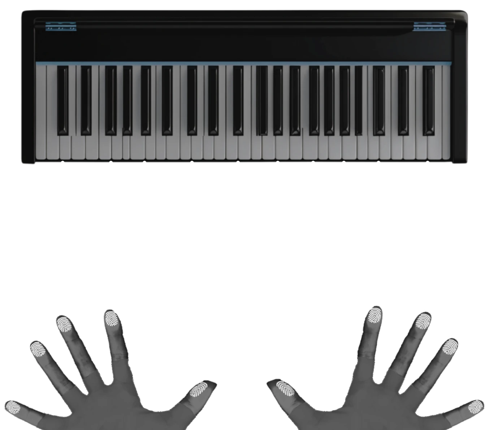

Identifying Musicians by How They Play: MIDI Behavioural Biometrics
A machine learning system which leverages MIDI data to identify musicians based on freestyle piano performance. This system confidently identified the correct musician from a known performer dataset when analyzing freestyle play.